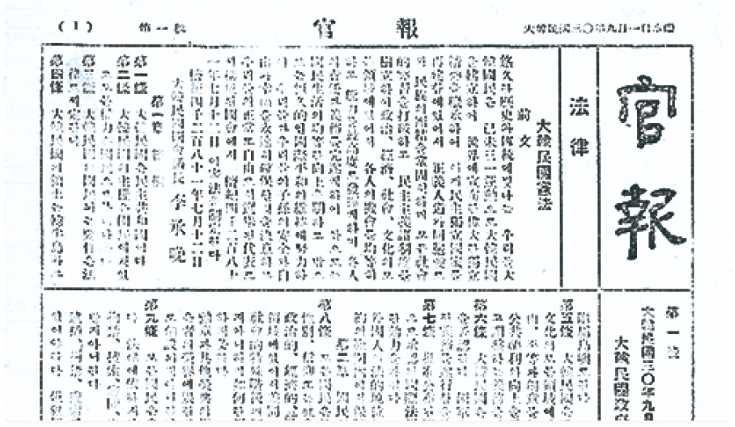

‘관보’란 정부가 국민들에게 널리 알릴 사항을
편찬하여 간행하는 국가의 공고기관지입니다.
관보를 검색할 수 있습니다. 검색어를 입력하고 검색 버튼을 누르거나 엔터키를 누르세요.
소장 현황
더보기구한국 관보
(1894~1910)
1894
조선총독부 관보
(1910~1945)
1910
미군정청 관보
(1945~1948)
1945
대한민국 관보
(1948~2000)
1948
대한민국 전자관보
(2001~)
2000

1894년부터 1945년까지 발행된 구한국 관보 및 조선총독부 관보를 제공합니다.
기본적인 키워드 검색 외에도 발행날짜, 편찬구분에 따라 관보를 검색할 수 있으며,
전체 7,289건의 기사를 제공하고 있습니다.
1945년부터 2000년까지 발행된 미군정청 관보 및 대한민국 관보를 제공합니다.
기본적인 키워드 검색 외에도 편찬구분에 따라 관보를 검색할 수 있으며, 전체 15,642건의 기사를 제공하고 있습니다.
대한민국 전자관보
2001년부터 현재까지 발행되고 있는 대한민국 전자관보를 제공합니다.
기본적인 키워드 검색 외에도 편찬구분에 따라 관보를 검색할 수 있으며, 전체 129,347건의 기사를 제공하고 있습니다.
구한국~조선총독부 관보
1894년부터 1945년까지 발행된 관보를 제공합니다. 전체 7,289건의 기사를 제공하고 있습니다.
미군정청~대한민국 관보
1945년부터 2000년까지 발행된 관보를 제공합니다. 전체 15,642건의 기사를 제공하고 있습니다.
대한민국 전자관보
2001년부터 현재까지 발행되고 있는 전자관보를 제공합니다. 전체 129,347건의 기사를 제공하고 있습니다.